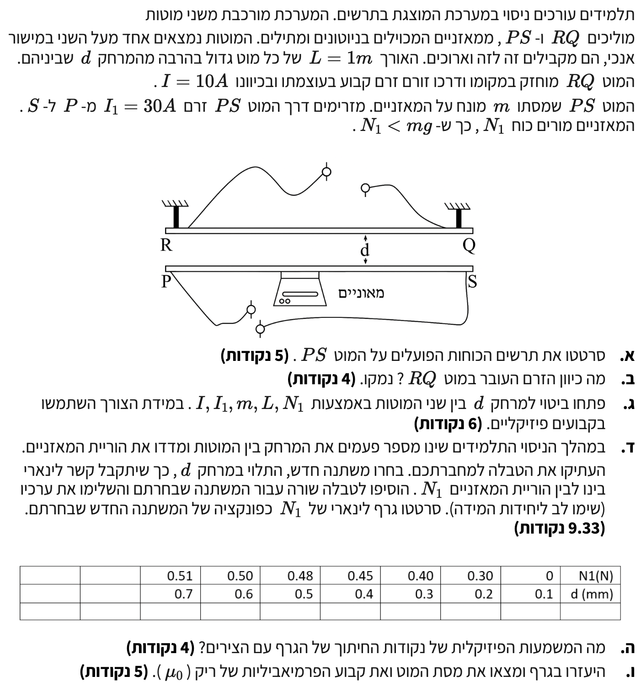

מערכת מוטות ושדה מגנטי
פתרון מתכונת 1 שאלה 4 | פיזיקה 5 יח"ל
פתרון מודרך, צעד-אחר-צעד: ניתוח כוחות מגנטיים, שיווי משקל ובניית גרף.
עודכן:
--- --:--:--
מבט כללי על השאלה
שלום לכולם! בפתרון זה נעבוד בצורה מסודרת, שלב אחר שלב. נלמד איך לנתח מערכת כוחות, נראה איך פועל חוק הפעולה והתגובה של ניוטון על חוטים נושאי זרם, ונבין כיצד לבנות גרף ליניארי מתוך נתונים ניסיוניים.
זכרו: תאוצת הכובד \( g \) תמיד מוגדרת כחיובית ושווה ל- \( 10 \text{ m/s}^2 \), ואנו תמיד עובדים במערכת יחידות תקנית (MKS: מטר, קילוגרם, שנייה, אמפר).

[תמונת השאלה המקורית]
לא נמצאה תמונה בשם question-image.png באותה תיקייה.
מה נתון:
- מוט PS שמסתו \( m \) מונח על מאזניים.
- הוריית המאזניים היא כוח נורמלי \( N_1 \).
- נתון מפתח: \( N_1 < mg \).
- תאוצת הכובד: \( g = 10 \text{ m/s}^2 \).
מה מחפשים:
לשרטט את תרשים הכוחות (FBD) הפועלים על המוט PS ולהסביר את כיוונם.
ניתוח פיזיקלי ושרטוט כוחות:
המוט נמצא במנוחה, לכן שקול הכוחות עליו הוא אפס. הכוחות הפועלים עליו בציר האנכי הם:
- כוח הכובד מופעל על ידי כדור הארץ: \( W = mg \) כלפי מטה.
- הכוח הנורמלי מהמאזניים: \( N_1 \) כלפי מעלה.
- מכיוון שנתון ש- \( N_1 < mg \), המשמעות היא שכוח הכובד גדול מהכוח הנורמלי. כדי שהמוט יישאר בשיווי משקל (שקול כוחות אפס), חייב לפעול כוח נוסף כלפי מעלה שיעזור למאזניים לתמוך במוט. כוח זה הוא הכוח המגנטי \( F_B \).
טיפ מורה:
זכרו: הוריית מאזניים מודדת תמיד את הכוח הנורמלי שהמאזניים מפעילים על הגוף. כאשר המאזניים מראים ערך קטן ממשקלו האמיתי של הגוף (\( mg \)), זה סימן שיש כוח נוסף המושך את הגוף כלפי מעלה.
מה נתון:
- כיוון הזרם במוט PS הוא מ-P ל-S.
- הסקנו מסעיף א' שהכוח המגנטי הפועל על מוט PS מכוון כלפי מעלה (לכיוון מוט RQ).
מה מחפשים:
את כיוון הזרם במוט העליון RQ ונימוק פיזיקלי לכך.
הסבר ופתרון:
מכיוון שהכוח המגנטי הפועל על מוט PS מכוון כלפי מעלה (לכיוון המוט RQ), אנו מבינים שפועל כוח משיכה מגנטי בין שני המוטות.
על פי חוקי האלקטרומגנטיות, בין שני תילים מקבילים נושאי זרם יפעל כוח משיכה אם ורק אם הזרמים בהם זורמים באותו הכיוון.
מסקנה: כיוון הזרם במוט העליון חייב לזרום באותו הכיוון, כלומר מ-R ל-Q.
טיפ מורה: הוכחה באמצעות כלל יד ימין
1. הזרם ב-RQ יוצר סביבו שדה מגנטי. נניח שהזרם מ-R ל-Q. לפי כלל יד ימין הראשון (אגודל כיוון הזרם ימינה, אצבעות מסתובבות), השדה המגנטי שנוצר באזור של המוט PS מכוון לתוך הדף (\( \otimes \)).
2. כעת נסתכל על מוט PS. הזרם בו זורם ימינה (מ-P ל-S). הוא נמצא בתוך שדה מגנטי שכוונו לתוך הדף. נפעיל את כלל יד ימין השני (כוח לורנץ על תיל): אצבעות לתוך הדף (שדה B), אגודל ימינה (זרם I), וכף היד תדחוף כלפי מעלה.
זה בדיוק תואם את מה שהסקנו בסעיף א'! מסקנה: כיוון הזרם מ-R ל-Q הוא אכן הנכון.
מה נתון:
- זרם במוט העליון: \( I = 10 \text{ A} \).
- זרם במוט התחתון: \( I_1 = 30 \text{ A} \).
- אורך כל מוט: \( L = 1 \text{ m} \).
- מרחק בין המוטות: \( d \).
מה מחפשים:
לפתח ביטוי למרחק \( d \) באמצעות הפרמטרים \( I, I_1, m, L, N_1 \) וקבועים פיזיקליים.
נוסחאות מהדף:
\( \Sigma\vec{F} = m\vec{a} \)
\( \frac{F}{l} = \frac{\mu_0}{2\pi}\frac{I_1 I_2}{d} \)
יישום החוק השני של ניוטון:
כדי למצוא את הקשר למרחק \( d \), נתמקד במשוואת הכוחות של מוט PS (התחתון) בלבד, כפי שניתחנו בסעיף א'. נגדיר ציר Y חיובי כלפי מעלה.
על פי החוק השלישי של ניוטון (חוק הפעולה והתגובה), הכוח המגנטי \( F_B \) הפועל על המוט התחתון על ידי המוט העליון זהה בגודלו לכוח שהמוט התחתון מפעיל על המוט העליון, והוא ביטוי ישיר של המרחק \( d \) ביניהם.
פיתוח אלגברי:
שלב 1: בידוד הכוח המגנטי
המוט התחתון במנוחה (גודל המהירות קבוע ואפס, לכן התאוצה אפס), ולכן סכום הכוחות הפועלים עליו הוא אפס:
\[ \Sigma F_{y,PS} = N_1 + F_B - mg = 0 \implies F_B = mg - N_1 \]
שלב 2: הצבת כוח מגנטי בין תילים
כעת, נשתמש בנוסחה מהדף לכוח המגנטי בין שני תילים. נכפיל את שני אגפי המשוואה באורך התיל \( L \):
\[ F_B = \frac{\mu_0 \cdot I \cdot I_1 \cdot L}{2\pi d} \]
שלב 3: השוואה ובידוד המרחק
נשווה בין שני הביטויים של הכוח המגנטי ונבודד את המרחק \( d \):
\[ \frac{\mu_0 \cdot I \cdot I_1 \cdot L}{2\pi d} = mg - N_1 \]
\[ 2\pi d (mg - N_1) = \mu_0 \cdot I \cdot I_1 \cdot L \]
מסקנה: \( d = \frac{\mu_0 \cdot I \cdot I_1 \cdot L}{2\pi (mg - N_1)} \)
מה נתון:
טבלת מדידות מקורית של המרחק \( d \) במילימטרים (mm) והוריית המאזניים \( N_1 \) בניוטונים (N).
| N1 (N) |
0 |
0.30 |
0.40 |
0.45 |
0.48 |
0.50 |
0.51 |
| d (mm) |
0.1 |
0.2 |
0.3 |
0.4 |
0.5 |
0.6 |
0.7 |
מה מחפשים:
להשלים טבלה שתאפשר קבלת קשר ליניארי בין המשתנים, ולסרטט גרף מתאים.
שלב 0 - המרת יחידות ומציאת קשר ליניארי:
בסעיף הקודם קיבלנו את המשוואה:
\[ \frac{\mu_0 \cdot I \cdot I_1 \cdot L}{2\pi d} = mg - N_1 \]
נסדר את המשוואה כדי לקבל קשר של פונקציה קווית מהצורה \( y = Ax + B \). המשתנה התלוי שלנו (בציר ה-Y) הוא הוריית המאזניים \( N_1 \) (הוא מגיב לשינוי המרחק).
\[ N_1 = -\left( \frac{\mu_0 I I_1 L}{2\pi} \right) \cdot \frac{1}{d} + mg \]
מכאן אנו רואים שכדי לקבל קשר ליניארי, עלינו לבחור במשתנה הבלתי תלוי (ציר X) להיות \( x = \frac{1}{d} \).
המרת יחידות: הנתונים נתונים במילימטרים. נעביר למטרים (MKS) או לחלופין נרשום את היחידות בבירור בטבלה. נגדיר את ציר ה-X להיות \( \frac{1}{d} \) ביחידות של \( \text{mm}^{-1} \) (שזה בעצם \( 10^3 \text{ m}^{-1} \)). לשם פשטות נוחה בגרף נשתמש ב- \( \frac{1}{d} [\text{mm}^{-1}] \).
טיפ מורה:
שימו לב להקבלה לפונקציה ליניארית \( y = mx + b \) (אל תבלבלו את ה-m של השיפוע עם המסה):
\( y \rightarrow N_1 \)
\( x \rightarrow \frac{1}{d} \)
השיפוע של הגרף יהיה: \( \text{Slope} = -\frac{\mu_0 I I_1 L}{2\pi} \)
נקודת החיתוך עם ציר ה-Y תהיה: \( b = mg \)
הטבלה המעובדת:
| \( \frac{1}{d} \, [\text{mm}^{-1}] \) |
10 |
5 |
3.33 |
2.5 |
2 |
1.66 |
1.43 |
| N1 (N) |
0 |
0.30 |
0.40 |
0.45 |
0.48 |
0.50 |
0.51 |
מה מחפשים:
להסביר מה מייצגות נקודות החיתוך של הגרף עם הצירים במציאות הפיזיקלית.
נקודת חיתוך עם ציר Y אנכי (\( 1/d \rightarrow 0 \)):
כאשר \( 1/d \) שואף לאפס, המשמעות היא שהמרחק \( d \) שואף לאינסוף. כאשר המוטות רחוקים מאוד זה מזה, הכוח המגנטי ביניהם שואף לאפס (\( F_B = 0 \)). במצב זה, מתוך המשוואה \( N_1 = mg - F_B \), נקבל \( N_1 = mg \).
משמעות פיזיקלית: נקודת החיתוך עם ציר ה-Y מייצגת את המשקל העצמי של מוט PS (\( mg \)) ללא כל השפעה מגנטית.
נקודת חיתוך עם ציר X אופקי (\( N_1 = 0 \)):
בנקודה זו הוריית המאזניים היא אפס. הדבר קורה כאשר המוט מרחף קלות, כלומר הכוח המגנטי המושך כלפי מעלה שווה בדיוק לכוח הכובד המושך כלפי מטה (\( F_B = mg \)).
משמעות פיזיקלית: ערך ה- \( 1/d \) בנקודה זו מייצג את המרחק ההופכי שבו המוט PS מאבד מגע (מרחף) מעל המאזניים והכוח הנורמלי מתאפס.
מה נתון:
- גרף הפונקציה שבנינו.
- \( I = 10 \text{ A}, I_1 = 30 \text{ A}, L = 1 \text{ m} \).
- תאוצת הכובד \( g = 10 \text{ m/s}^2 \).
מה מחפשים:
לחשב מתוך הגרף את המסה \( m \) ואת הקבוע \( \mu_0 \).
חישוב שיפוע קו המגמה:
נבחר שתי נקודות הנמצאות בדיוק על קו המגמה שסרטטנו. למשל, ניקח את הנקודות \((10, 0)\) ו- \((5, 0.3)\). נחשב את השיפוע (Slope):
\[ \text{Slope} = \frac{y_2 - y_1}{x_2 - x_1} = \frac{0.3 - 0}{5 - 10} = \frac{0.3}{-5} = -0.06 \text{ N}\cdot\text{mm} \]
נמיר את השיפוע ליחידות תקניות (MKS):
\[ -0.06 \text{ N}\cdot\text{mm} = -0.06 \times 10^{-3} \text{ N}\cdot\text{m} = -6 \times 10^{-5} \text{ N}\cdot\text{m} \]
טיפ מורה: חוקי הברזל לחישוב שיפוע!
כאשר אתם מחשבים שיפוע מתוך גרף, לעולם אל תיקחו סתם שתי נקודות מהטבלה! עליכם לבחור שתי נקודות שנמצאות ממש על קו המגמה שסרטטתם. מותר להשתמש בנקודה מהטבלה אך ורק אם עברתם עליה במדויק עם הסרגל. השתדלו לבחור נקודות שקל לקרוא מהרשת של הגרף, והכי חשוב: בחרו שתי נקודות שרחוקות ככל האפשר זו מזו. ככל שהמרחק ביניהן גדול יותר, כך השגיאה היחסית בחישוב קטנה יותר והתוצאה שלכם תהיה הרבה יותר מדויקת.
חישוב המסה \( m \) (דרך נקודת החיתוך):
כפי שהסברנו בסעיף ה', נקודת החיתוך עם ציר ה-Y שווה ל- \( mg \). כדי למצוא אותה במדויק, נציב אחת מהנקודות ואת השיפוע שחישבנו במשוואת הישר \( y - y_1 = m(x - x_1) \) (האות m כאן מייצגת שיפוע, לא מסה):
\[ y - 0 = -0.06(x - 10) \implies y = -0.06x + 0.6 \]
נקודת החיתוך היא \( 0.6 \text{ N} \). נשווה אותה למשקל:
\[ mg = 0.6 \implies m \cdot 10 = 0.6 \implies m = 0.06 \text{ kg} \]
מסקנה: המסה היא \( 60 \text{ g} \).
חישוב הקבוע \( \mu_0 \):
ראינו ששיפוע הגרף התיאורטי הוא \( -\frac{\mu_0 I I_1 L}{2\pi} \).
נשווה בין השיפוע התיאורטי לשיפוע הניסויי שחישבנו (ביחידות MKS):
\[ -\frac{\mu_0 \cdot 10 \cdot 30 \cdot 1}{2\pi} = -6 \times 10^{-5} \]
\[ \frac{300 \mu_0}{2\pi} = 6 \times 10^{-5} \]
\[ 300 \mu_0 = 12\pi \times 10^{-5} \]
\[ \mu_0 = \frac{12\pi \times 10^{-5}}{300} = \frac{12\pi \times 10^{-5}}{3 \times 10^2} \]
מסקנה: \( \mu_0 = 4\pi \times 10^{-7} \, \frac{\text{T}\cdot\text{m}}{\text{A}} \)
טיפ מורה:
שימו לב לאימות המדהים! התוצאה שקיבלנו עבור \( \mu_0 \) מתוך הניסוי זהה לחלוטין לערך של פרמיאבליות הריק המופיע בדף הנוסחאות: \( 4\pi \cdot 10^{-7} \text{ T}\cdot\text{m/A} \). זוהי הוכחה לכך שהניסוי והחישובים שלנו מדויקים לחלוטין.